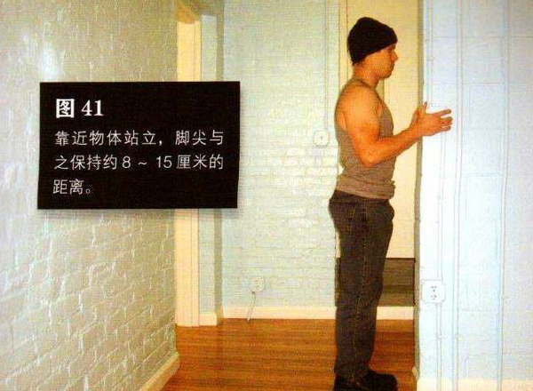

找一个可抓握且很稳固的竖直物体，门框和高一点的栏杆都是上好之选。靠近物体站立，脚尖与之保持约 8 一巧厘米的距离。以舒服的姿势抓住该物体，理想情况是双手与肩同宽，但不必要——只要双手对称即可。这是该动作的起始姿势。
由于你距离物体很近，所以手臂会弯曲。身体慢慢向后倾，在此过程中伸展手臂，直到手臂几乎伸直、身体后倾与地面成一定角度为止。此时，你的上背部应该有拉伸感，手臂可能也会有同感。暂停一会，再并拢肩脚骨并弯曲手臂把身体拉回到起始姿势。暂停，然后再重复该动作。
初级标准：1 组，10 次
中级标准：2 组，各 20 次
高级标准：3 组，各 40 次